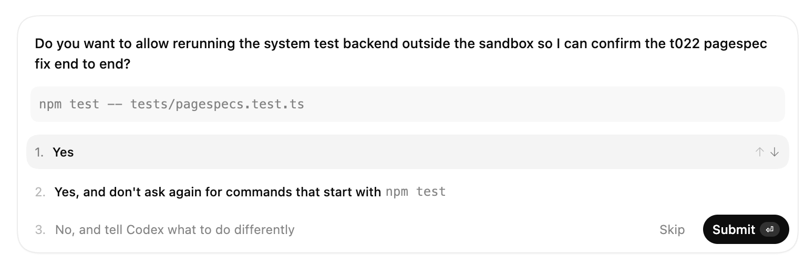

considering dark software factories
→
site for mark - changelog
→
example - Codex asking to run outside the Codex sandbox
example - Codex asking to run outside the Codex sandbox
^
example
-
project - Codex
asking to run outside the
codex sandbox
